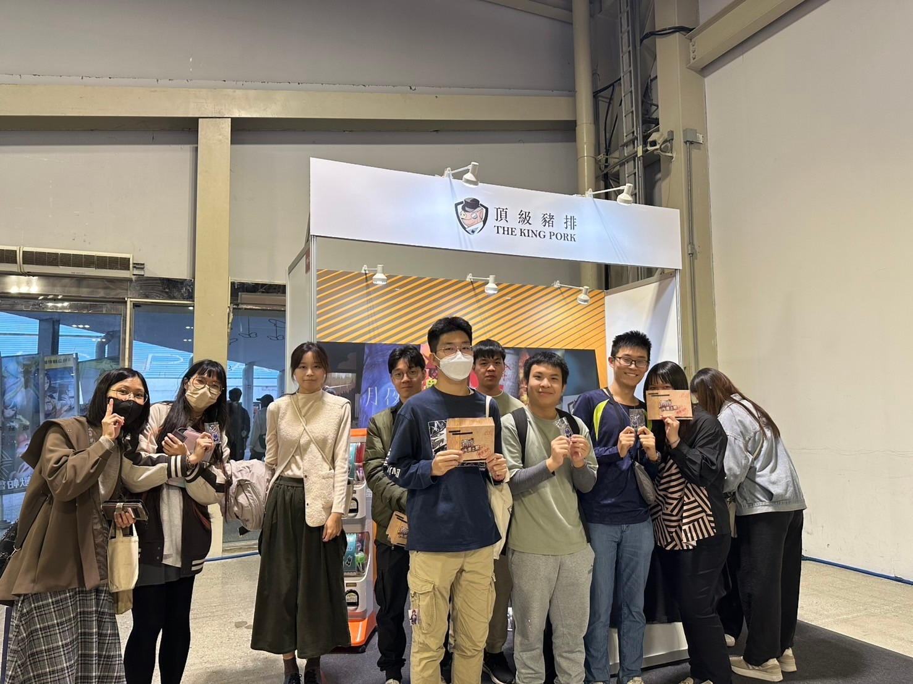

空間認知設計・展場 UX・新用戶引導
G-EIGHT 遊戲展展場規劃
三年從封閉攤位迭代至跨 14 家廠商的展場實境解謎，來店轉化率提升 8%。
G-EIGHT 是以玩家體驗為核心的獨立遊戲展，參展者多為獨立遊戲工作室。頂級創意行銷的實體密室逃脫，本質上也是一種實體形式的獨立遊戲。連續三年參展，我主導展場設計與執行。
傳統密室逃脫展位沿用封閉隔間設計，理由是保留空間驚喜感與題目不暴雷。但在展場場景中，這個設計造成兩個問題：
根本問題是認知缺口，而不是意願缺乏。
現代電子遊戲的玩家可以透過直播主動選擇「要不要被暴雷」。密室逃脫作為遊戲的一種，為什麼不能給觀眾同樣的選擇權？
傳統做法是品牌替玩家決定「不能看」。新的設計邏輯是：把選擇權還給觀眾——他們可以選擇看、選擇被暴雷，然後決定要不要進場體驗。
沿用業界慣例，封閉隔間設計。路過者無法從外部感知內容。
以格柵搭建隔間，路過的觀眾可以直接看到裡面的玩家在遊玩，但不能直接進入——想進場必須報名，每日開放名額。觀眾透過現場試玩、解題完成並追蹤官方社群，可以獲得門市折價券，形成展場到門市的轉化路徑。
把整個展場變成一個大遊戲：
展場搭建縮時影片

展場現場